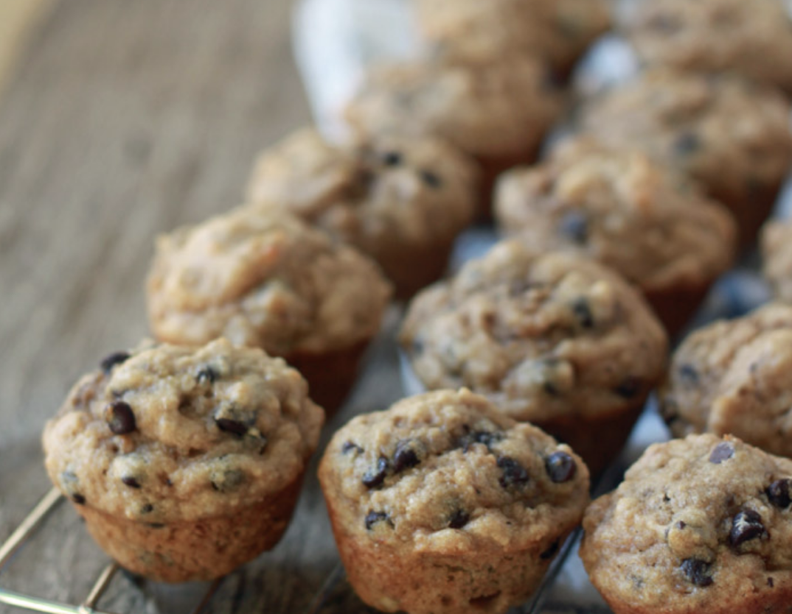

Banana Chocolate Chip Mini Muffins Recipe

Try to only have one... We dare you!
Ingredients:
- 1.5 cups flour
- 2/3 cups sugar
- 1.5 tsps baking powder
- 1 cup mashed very ripe bananas
- 1 large egg
- 1/4 cup butter, melted
- 1/4 cup sour cream
- 2 tsps vanilla extract
- 1/4 cup low-fat milk
- 1/2 cup mini chocolate chips
Cooking Steps:
-
Heat oven to 350F
-
Combine the flour, sugar, baking powder, and salt and stir with a fork to blend
-
In a separate bowl, mix mashed bananas, egg, melted butter, sour cream, vanilla extract, and milk. Beat on medium until well belnded. Reduce the speed to lwo and blend in the dry ingredients. (do not overmix)
-
Fill a mini muffin pan with batter and cook for 20 minutes. Repeat as needed. Should make 36.
Enjoy!
Home